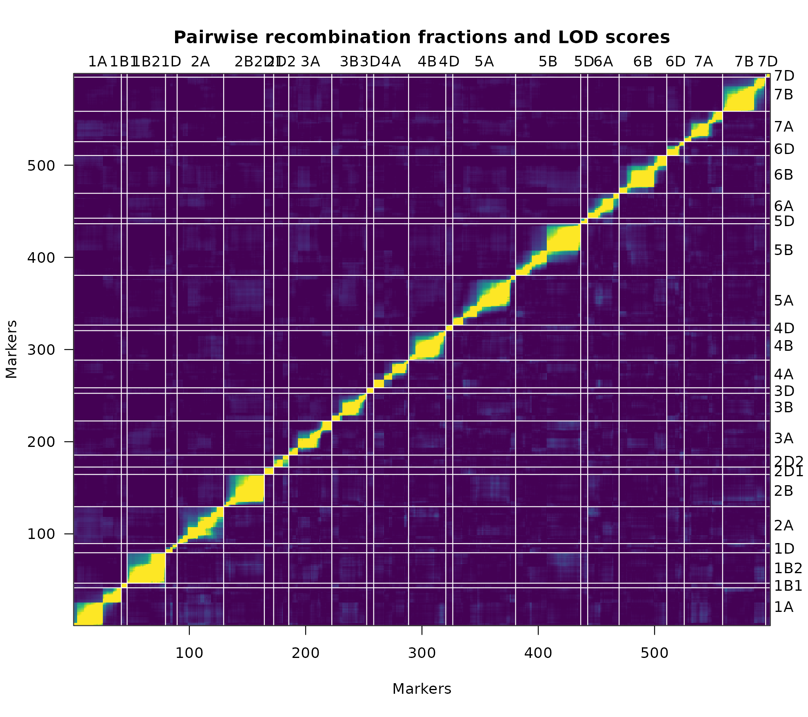
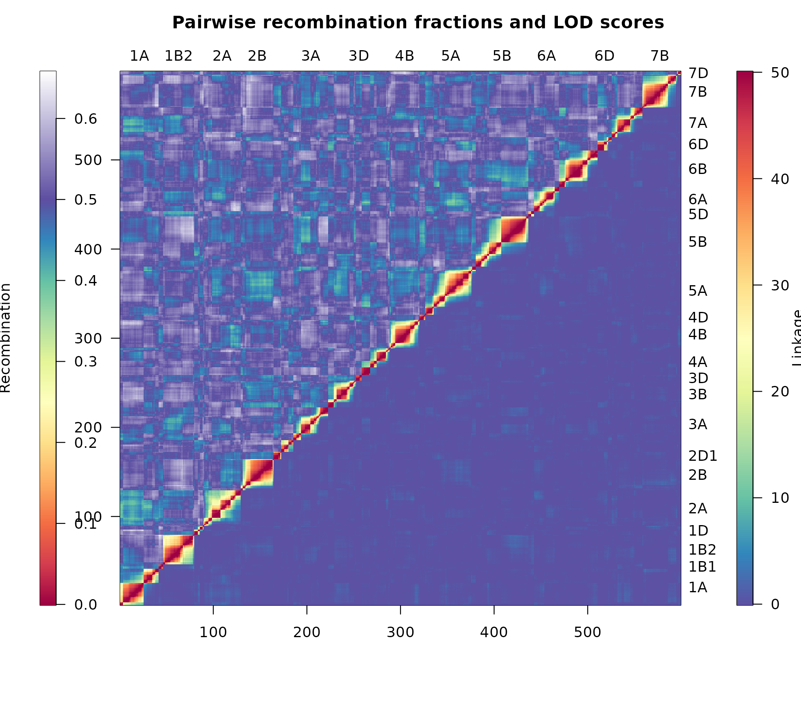

The most informative single check on a constructed linkage map is a heat map combining the estimated pairwise recombination fractions between markers with the LOD scores expressing the strength of linkage between each pair. Let denote the estimated recombination fraction between markers and ; the LOD score is then a test of no linkage, . High LOD scores indicate rejection of that hypothesis and therefore strong linkage between the pair.
The R/qtl display and its limitations
R/qtl provides plotRF() for this purpose (Broman and Wu 2014).
Strong pairwise linkages appear as hot, or red, areas and weak linkages
as cold, or blue, areas.
plotRF(mapDH)Warning in plotRF(mapDH): Running est.rf.
Heat map of the constructed linkage map mapDH using
plotRF().
The display has several limitations, most of which are noted in its own documentation: recombination fractions are transformed by to bring them onto a scale comparable with LOD scores, and values of either quantity exceeding 12 are set to 12.
This transformation and the fixed threshold impose three restrictions.
- The LOD score depends strongly on the number of individuals in the population, so an upper limit of 12 may represent the pairwise linkage between some markers very poorly. In the figure above this appears as hot areas of linkage between markers that should be rendered in cooler colours.
- The estimated recombination fractions are not themselves displayed in the upper triangle, and no legends relate the colours to the numerical LOD scores and recombination fractions.
- The rainbow colour spectrum is perceptually unsuited to the representation of diverging numerical data.
The ASMap display
heatMap()
addresses each of these. LOD scores are plotted on the lower triangle
and the estimated recombination fractions, untransformed, on the upper.
The fixed threshold is replaced by the user-defined arguments
lmax and rmin, which may be set to suit the
population size and the requirements of the plot.
heatMap(mapDH, lmax = 50)Warning in heatMap(mapDH, lmax = 50): Running est.rf.
Heat map of the constructed linkage map mapDH using
heatMap().
The most immediate difference is the colour palette. ASMap uses the
diverging "Spectral" palette of
RColorBrewer, which softens the display and draws a
gentler distinction between strongly and weakly linked markers. Separate
legends for the LOD scores and the recombination fractions appear on
either side of the plot.
Because the recombination fractions are plotted without transformation, the complete scale is shown, including values above the theoretical threshold of 0.5. Extending the scale beyond 0.5 in this way allows regions in which markers are out of phase with their neighbours to be recognised.
Matching the two scales
An accurate heat map is obtained when the heat of the LOD scores matches the heat of the estimated recombination fractions. Setting
lmax = 50achieves this formapDH; a different population size will require a different value.
This matching is the reason lmax exists as an argument
rather than a constant. Where the two triangles disagree visibly, the
LOD threshold rather than the map is usually at fault.
Subsetting the display
As with plotRF(), the map may be subset by linkage group
through chr. The mark argument subsets
further, indexing a set of markers within the linkage groups nominated
by chr, which is useful for examining a suspected junction
between two groups at close range.
Further reading
- Diagnosing genotypes and markers — numerical counterparts to this graphical check
- Worked example II — heat maps used to identify linkage groups requiring merging
-
heatMap()— full argument documentation